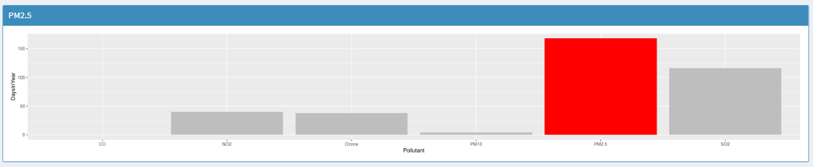
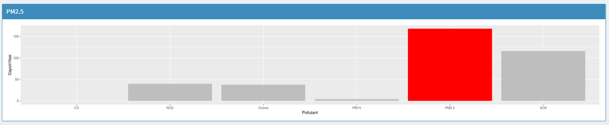
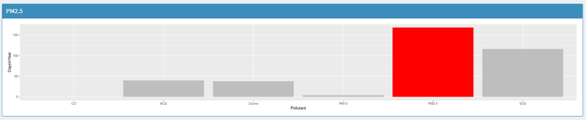

2000

 

Around the early 2000s we see a turn in which pollutant becomes more popular. The days of moderate levels are higher but the good days are reduced
There are no hazardous Days but almost half would be considered unhealthy for sensitive people But there are higher number of days where SO2 was the lead pollutant
SO2 appears to be relevant still however there are less unhealthy days during this time

Around the early 2000s we see a turn in which pollutant becomes more popular. The days of moderate levels are higher but the good days are reduced
SO2 has significantly decreased compared to PM2.5
The days have shifted to a moderate quality of air and nearly eradicated every unhealthy. Perhaps a big envirment awareness movement happened
Ozone seems to be catching up to PM2.5 in Cook COunty and compared to 2010 there number of moderate quality days decreased. Ozone could play a significant factor in air quality
Overall, air quality seems to improve over time however that could change depending on how severe ozone could become. It also seems that SO2 has become a very minor chemical in air today.